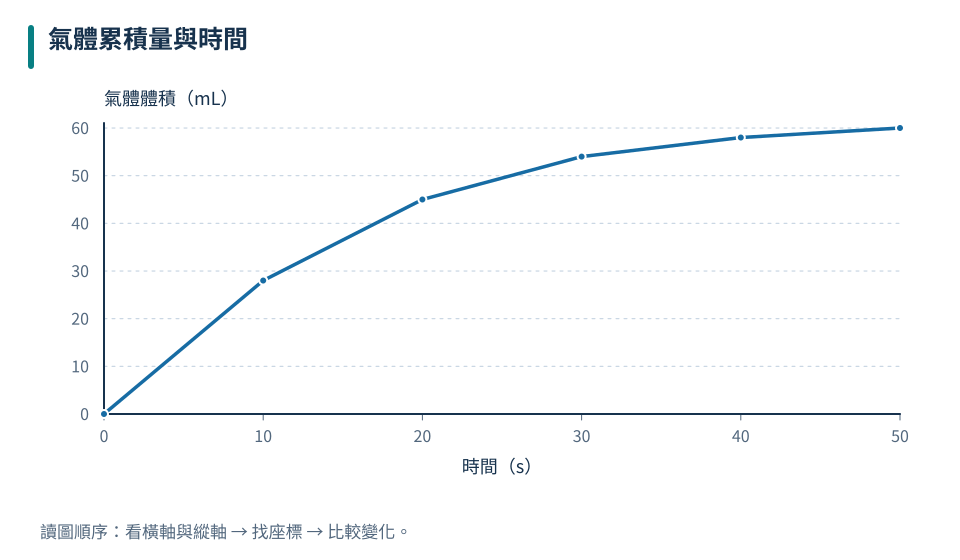
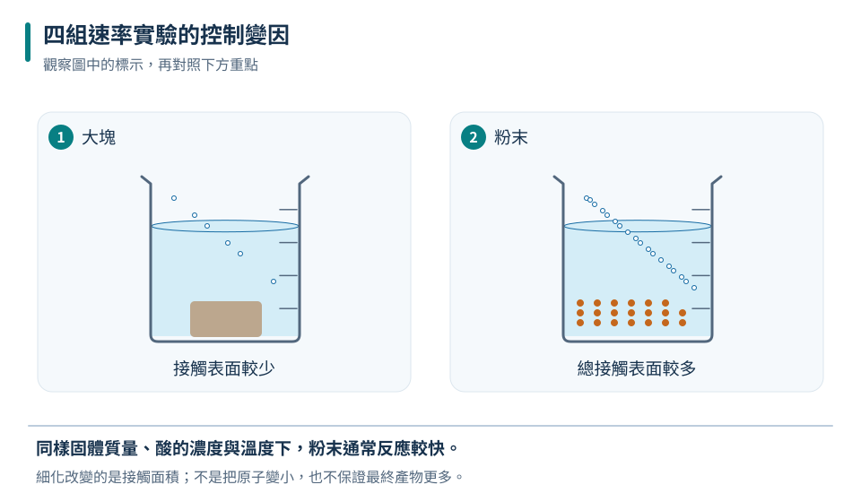
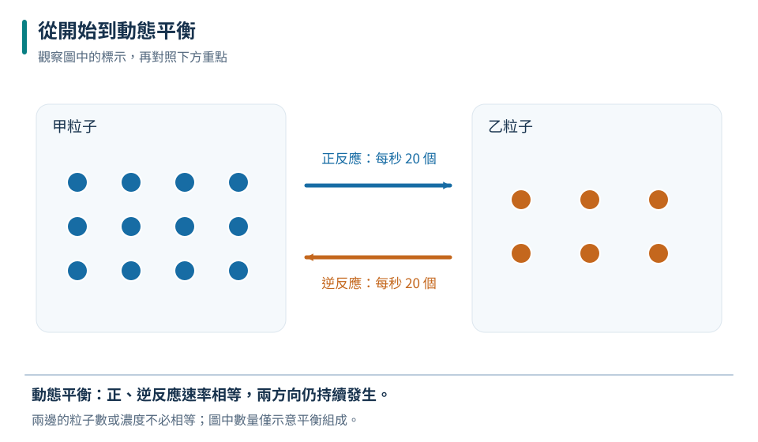

先選觀察量
追蹤的量必須隨反應進度有規律變化，例如累積氣體體積。
八下 · 化學 · 第 4 章
有些反應一瞬間完成，有些卻要等上數年。這一章把「反應多快」和「最後有多少」分開，利用碰撞模型、實驗曲線與可逆反應，理解溫度、濃度、接觸面積和催化劑如何改變反應歷程。
先備概念：能辨認化學反應與反應物、生成物、會讀折線圖與控制變因
LEARN & EXPLAIN
反應速率描述反應物消耗或生成物形成的快慢。觀察氣體體積、質量變化、顏色或沉澱量，都能追蹤反應進度；比較時必須用相同時間區間和相同測量方式。曲線越陡，代表該段時間變化越快；曲線變平只表示觀察量不再明顯改變，不等於粒子停止運動。
粒子要互相接觸並以合適方向與足夠能量碰撞，才可能反應。反應一開始常因反應物較多而較快，之後反應物逐漸消耗，有效碰撞次數下降，速率也可能變慢。平均速率是整段變化量除以時間，不能代表每一瞬間都一樣快。
追蹤的量必須隨反應進度有規律變化，例如累積氣體體積。
同一圖上，單位時間變化越大，反應越快。
較快到終點不代表最後一定生成更多產物。
| 時間（s） | 氣體體積（mL） |
|---|---|
| 0 | 0 |
| 10 | 28 |
| 20 | 45 |
| 30 | 54 |
| 40 | 58 |
| 50 | 60 |

前10秒曲線最陡；後段逐漸平坦，總量接近60 mL。
前10秒較快；比較的是相同10秒內的體積變化。
累積量較多不一定代表當下速率較快；要看曲線斜率或同一時段的變化量。
LEARN & EXPLAIN
升高溫度使粒子運動更劇烈，碰撞更頻繁，且較多碰撞具有足夠能量；提高反應物濃度通常使單位體積中粒子變多；把固體磨細則增加可接觸的總表面積。這些解釋都有適用條件，不能把「顆粒變小」說成原子或分子本身變小。
催化劑提供另一條較容易進行的反應途徑，使正、逆反應都較快，反應後可再生使用。它不憑空製造產物，也不改變反應物與生成物的能量差或平衡位置。比較速率因素時，一次只改變一項主要條件，並維持反應物總量、裝置和判定終點一致。
增加有效碰撞比例，通常使反應加快。
提高接觸機會，但不改變粒子的種類。
降低反應途徑的能量障礙，反應前後可再生。

燒杯中的形狀只代表顆粒狀態；實作須依教師規範，不在密閉容器中讓氣體大量累積。
只讓顆粒大小不同，其他主要條件保持相同。
加入催化劑常使反應更快，但不表示最後必定生成更多，也不能把催化劑列入反應物淨消耗。
LEARN & EXPLAIN
有些反應在相同條件下可以朝正、逆兩方向進行，用雙向箭號表示。封閉系統中，經過一段時間後正反應速率與逆反應速率可能相等，巨觀濃度維持不變，稱為動態平衡。「動態」表示兩方向仍持續發生，不是所有粒子停止，也不是反應物和生成物濃度一定相等。
改變濃度、溫度或壓力，可能使系統在新的條件下重新達到平衡；影響方向必須依具體反應判斷。催化劑同時加快正逆反應，只縮短到達平衡的時間，不改變同溫下的平衡組成。打開系統讓物質逸出時，原先以封閉系統建立的平衡描述可能不再適用。
平衡時正、逆反應速率相等，不代表濃度相等。
外觀看似不變，但微觀反應仍持續。
改變環境後可能先偏離，再建立新的平衡。

箭頭表示時間發展；平衡是速率關係，不是粒子數必定一半一半。
巨觀數量不變，但兩方向都持續進行。
平衡不是反應停止；若加入催化劑，兩方向都加快，原平衡組成不因此改變。
TRY, OBSERVE, EXPLAIN
REVIEW
追蹤的量必須隨反應進度有規律變化，例如累積氣體體積。
回到這一節複習增加有效碰撞比例，通常使反應加快。
回到這一節複習平衡時正、逆反應速率相等，不代表濃度相等。
回到這一節複習CHAPTER TEST
先獨立作答，再看解析。中難與難為編者估計，尚未經學生實測校準。